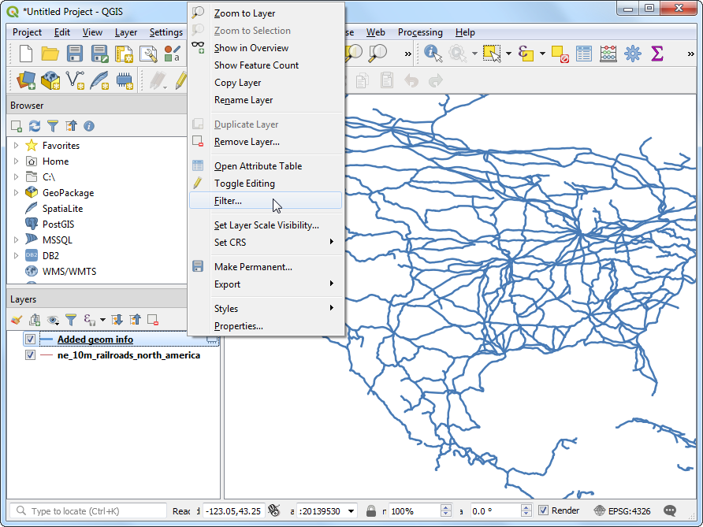
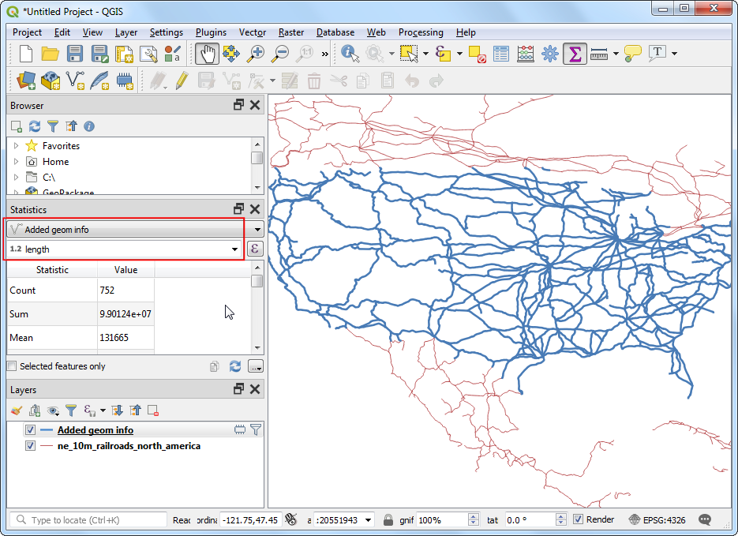
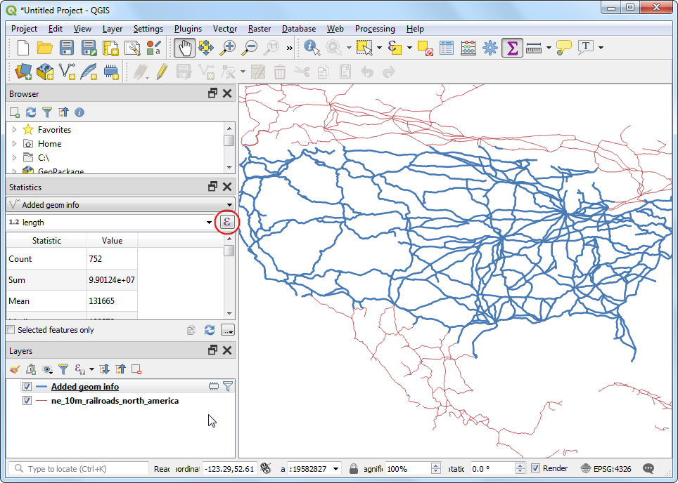

Ujaval Gandhi
Ujaval Gandhi선의 길이계산과 통계(QGIS3)¶
QGIS에는 길이, 면적, 둘레 등 피처의 지오메트리를 기반으로 다양한 속성을 계산하는 내장 함수 및 알고리즘이 있습니다. 이 튜토리얼에서는 지오메트리 속성 추가 도구를 사용하여 각 기능의 길이를 나타내는 값으로 열을 추가하는 방법을 보여줍니다.
작업 개요¶
북아메리카의 철도 폴리라인 레이어를 사용하여 미국내의 전체 철도길이를 산출해 낼 것입니다.
기타 스킬¶
피처를 선택하는 표현식 사용 표현식을 사용하여 피쳐 필터링
통계패널을 사용하여 열에 대한 통계를 계산하고 보십시오.
데이터 획득¶
Natural Earth has a public domain railroads dataset.
Download the North America supplement zip file from the portal.
아래링크를 통해 편리하게 데이터 세트를 내려받을 수 있습니다.
ne_10m_railroads_north_america..zip
데이터 소스 [NATURALEARTH]
과정¶
다운로드 한 “ne_10m_railroads_north_america”를 찾아 압축 풀기를 하십시오. ne_10m_railroads_north_america.shp 파일을 캔버스로 드래그하십시오.

새 레이어가 “ne_10m_railroads_north_america” Layers 패널에 들어가고, 이 레이어에는 북미 모든 지역의 철도를 나타내는 선이 있습니다. 이제 각 선 피처의 길이를 계산해 봅시다. 공간처리 ‣ 툴박스로 이동하십시오.

Vector geometry에서 지오메트리 속성 추가 알고리즘을 검색하고 찾습니다. 시작하려면 두 번 클릭하십시오.

지오메트리 속성 추가 대화 상자에서, 입력 레이어로 ne_10m_railroads_north_america를 선택합니다. 입력 레이어의 좌표 기준 시스템 (CRS)은 EPSG : 4326 WGS84입니다. 위도 및 경도가 좌표로, WGS84가 타원체, 각도가 단위 인 지리적 CRS입니다. 위도와 경도는 표준 길이가 아니기 때문에 평면 형상 기능을 사용하여 거리 나 면적을 정확하게 측정 할 수 없습니다. 다행히 QGIS는 타원형 지오메트리를 사용하여 거리를 계산하는 더 좋은 방법을 제공합니다. 이 방법은 넓은 영역에 걸쳐있는 레이어에 가장 정확한 방법입니다. 다음을 사용하여 계산 옵션으로 타원체를 선택하십시오. 실행을 클릭하십시오. 프로세스가 완료되면 닫기를 클릭하십시오.

참고
If your input layer is in a Projected CRS, you may choose Layer CRS option for calculation. Local or Regional projected coordinate systems are designed to minimize distortions over their region of interest, and thus are more accurate for such computation. Ellipsoidal is preferred for layers in a Geographic CRS (i.e. Lat/Lon). The default unit for ellipsoidal length calculation is Meters and can be changed by going to .
레이어 패널에 새로운 레이어가 추가된 것을 볼 수 있습니다. 이것은 거리에 대해 새 열이 추가 된 입력 레이어의 사본입니다. 추가된 지오메트리 정보 레이어를 마우스 오른쪽 버튼으로 클릭하고 속성 테이블 열기를 선택하십시오.

참고
형상 속성 추가 도구는 입력 레이어가 점, 선 또는 다각형인지에 따라 다양한 속성 세트를 추가합니다. 자세한 내용은 QGIS 설명서를 참조하십시오. <https://docs.qgis.org/testing/en/docs/user_manual/processing_algs/qgis/vectorgeometry.html#add-geometry-attributes>`_ 에 더 자세한 설명이 있습니다.
In the Attribute Table, you will see a new column called length. This contains the length of each line feature in meters. Also note that the sov_a3 attribute which contains the country code for each feature. Close the Attribute Table window.

이제 개별 철도 선로의 길이가 조정되었으므로 이들을 합치면 전체 철도 길이를 알 수 있습니다. 그러나 문제가 요구하는 것은 미국의 전체 철도 길이의 합만 필요하므로 미국 내에 포함 된 구간만 사용해야 합니다. sov_a3 열의 국가 코드 값을 사용하여 레이어를 필터링 할 수 있습니다. 추가 된 지오메트리 정보 레이어를 마우스 오른쪽 버튼으로 클릭하고 필터를 선택하십시오.

조회 빌더 대화 상자에서 다음 표현식”sov_a3” = ‘USA’을 입력하고 확인을 누르십시오.
"sov_a3" = 'USA'
지오메트리 정보가 적용된 레이어 옆에 필터가 적용되었음을 나타내는 아이콘이 나타납니다. 레이어에 미국의 선 세그먼트만 포함되어 있는지 시각적으로 확인할 수도 있습니다. 이제 선의 길이를 더할 준비가되었습니다. 속성 도구 모음에서 통계 요약 표시 단추를 클릭하십시오.

새로운 통계 패널이 열립니다. 추가 된 지오메트리 정보 레이어 및 ‘길이’ 열을 선택하십시오.

패널에 다양한 통계가 표시됩니다. ‘길이’단위는 미터입니다. 미터 대신 킬로미터를 사용하도록 계산을 변경하겠습니다. 통계 패널에서 필드 드롭 다운 메뉴 옆에있는 표현식 아이콘을 클릭하십시오.

표현식 대화 상자에서 다음 표현식 ‘length / 1000’을 입력하여 킬로미터로 변환하십시오.
length / 1000
미국 철도의 총 길이의 합이 표시됩니다.

If you want to give feedback or share your experience with this tutorial, please comment below. (requires GitHub account)